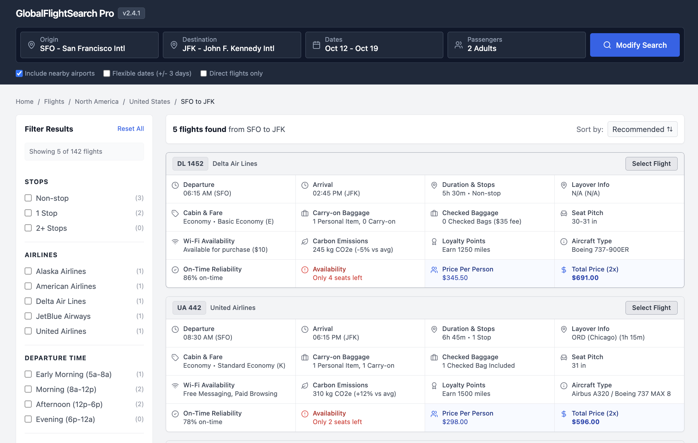

More Data Doesn’t Help Users — It Hurts Them
Most interfaces don’t suffer from a lack of data. They suffer from too much of it.
There’s a persistent belief in product teams that more information equals more power. If we just add one more column, one more metric, one more filter — users will be able to make better decisions.
In reality, the opposite happens.
More data doesn’t clarify; it overwhelms.
The slow death of clarity
This rarely happens all at once. It happens gradually.
It happens gradually.
A stakeholder asks for one more field. A team adds one more column. Another request comes in — seems reasonable.
Individually, each addition is harmless.
Together, they create something else entirely — a dense, noisy interface where nothing stands out.
Small additions compound into large problems.
The table problem
You see this most clearly in data grids.
What starts as a simple, usable table turns into something much harder to use:
- columns multiple
- visual density increases
- horizontal scrolling appears
- the primary identifier disappears
Eventually, you end up with what feels like a wall of data.
A real-world example
Take something familiar: searching for a flight.

Each result shows:
- departure and arrival times
- duration and stops
- layovers and aircraft type
- baggage rules and seat details
- Wi-Fi, emissions, loyalty points
- pricing and urgency signals
None of this is unnecessary. But now try scanning 15 of these.
That's not more power — that's more confusion. That's more work.
The horizontal scroll of doom
Once a table requires side-scrolling, something breaks.
The user can no longer see the primary identifier — the thing that gives the row meaning.
Store name. Customer. Account.
Without that anchor, the rest of the data loses context.
When everything is visible, nothing is visible
Dense interfaces remove your ability to guide attention.
- every cell is filled
- spacing disappears
- hierarchy collapses
Whitespace stops being a tool. Everything becomes equally loud.
Everything becomes equally loud.
If everything is important, nothing is.
The “wall of text” effect
At a certain point, users stop trying to read.
They scan. They skip. Then they disengage.
The interface no longer invites interaction — it repels it.
The illusion of utility
So why does this keep happening?
Because more data feels useful.
There’s a fear of missing something important. A belief that more inputs lead to better decisions.
But what actually increases is processing time.
Users spend more energy filtering than deciding.
More data increases effort faster than it increases value.
What users actually want
Often, users don’t want more data. They want a clear answer to a question.
Take a simple example. A sales rep asks for:
- business hours
- time zone
On the surface, that sounds like a request for more information.
But their real need underlies that (and often it's not what they say!). Their real question might be:
You don’t need two columns to answer that. You need a signal:
- Open (green)
- Closing soon (amber)
- Closed (red)
...that’s it.
Good interfaces are about answering questions, not exposing raw data.
Signal vs. noise
As you add more data, something subtle happens.
The important information doesn’t disappear — it gets drowned out.
The signal-to-noise ratio drops. Finding the right piece of information takes longer. Understanding it takes more effort.
This is where cognitive load comes in.
Every extra column forces the user to:
- scan more
- filter more
- decide more
That’s energy not spent solving the actual problem.
The squint test
There’s a simple way to evaluate this.
Squint at your interface. If it turns into a uniform gray blur, you’ve lost the battle.
There’s no hierarchy, no focal point, no guidance. Just noise.
The role of the designer
The job isn’t to include everything. It’s to decide what matters.
There’s a difference between a collection and a curation: A collection shows everything. A curation shows what’s relevant.
Designers are curators, not containers.
Designing for clarity
There are better ways to handle complexity.
1. Progressive disclosure
Keep the primary view simple. Move secondary data into:
- tooltips
- expandable rows
- detail panels
Let users pull information when they need it.
2. Opinionated defaults
The default view should be focused.
Show the 4–6 most actionable pieces of data. Everything else is optional.
3. Aggregation over fragmentation
Instead of showing multiple related fields, combine them.
Replace:
- multiple timestamps
- multiple statuses
With:
- a single status
- a “time since” indicator
4. Visual encoding
Don’t rely on raw numbers alone. Use:
- color
- icons
- small visual cues
So users can understand information at a glance.
5. The escape hatch
For power users, provide customization.
Let them add columns and rearrange views.
But don’t force everyone to live in that complexity by default.
The courage to simplify
Simple interfaces are not easy to build.
They require tradeoffs. They require saying no. They require resisting the 1,001st “small” request.
But the alternative is predictable: A product that technically has everything — and practically helps no one.
Good UX isn’t about how much you show. It’s about how little the user has to think.